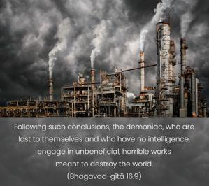
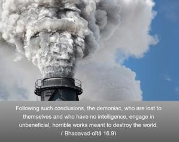
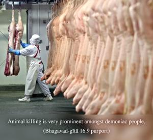

Following such conclusions, the demoniac, who are lost to themselves and who have no intelligence, engage in unbeneficial, horrible works meant to destroy the world.



The demoniac are engaged in activities that will lead the world to destruction. The Lord states here that they are less intelligent. The materialists, who have no concept of God, think that they are advancing. But according to Bhagavad-gītā, they are unintelligent and devoid of all sense. They try to enjoy this material world to the utmost limit and therefore always engage in inventing something for sense gratification. Such materialistic inventions are considered to be advancement of human civilization, but the result is that people grow more and more violent and more and more cruel, cruel to animals and cruel to other human beings. They have no idea how to behave toward one another. Animal killing is very prominent amongst demoniac people. Such people are considered the enemies of the world because ultimately they will invent or create something which will bring destruction to all. Indirectly, this verse anticipates the invention of nuclear weapons, of which the whole world is today very proud. At any moment war may take place, and these atomic weapons may create havoc. Such things are created solely for the destruction of the world, and this is indicated here. Due to godlessness, such weapons are invented in human society; they are not meant for the peace and prosperity of the world.